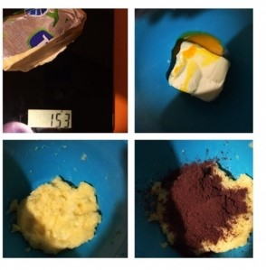
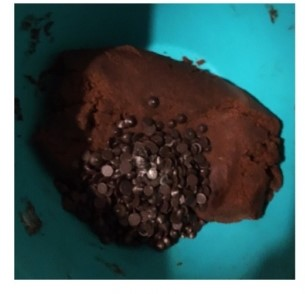
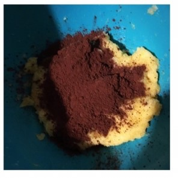
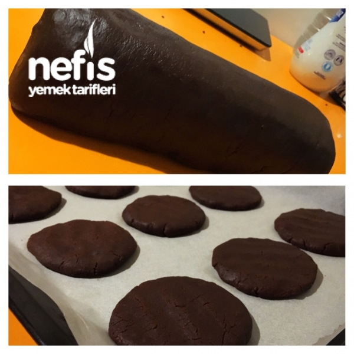

1 su bardağından biraz eksik şeker (Şekerli seviyorsanız tam bardak ilave edin)
1 paket vanilya
2 yemek kaşığı kakao
Çay kaşığı ucuyla tuz
1 paket kabartma tozu
2 su bardağı un
Yarım su bardağı damla çikolata
Kakaolu Kurabiye Tarifi Nasıl Yapılışı
Oda ısısındaki; tercihen tereyağı, yoksa margarin, yumurta sarısı, şeker ve vanilyayla krema kıvamına gelinceye kadar çırpılır.

Ayrı bir kapta; un, kabartma tozu, tuz ve kakao karıştırılır.Tuz koymamızın sebebi; kakao tadını vurgulamakta ciddi yardımcı olduğundan kaynaklıdır

Un karışımı yavaş yavaş yedirilerek diğer karışıma ilave edilir.Çok hoş dokulu bir hamur elde edilir.

En son içerisine damla çikolatalar ilave edilip, hamur buzdolabında 20 dakika dinlendirilir.Dinlenen hamurdan mandalina büyüklüğünde bezeler alıp, el içinde yassılaştırılır.
Çok kalın olmayacak şekilde bir form kazandırılır.
Çok muntazam olmalarına gerek yoktur, bu şekilde görüntüye orijinal bir hava katıyor.

Önceden ısıtılmış 180 derece fırında kontrollü 25 dakika pişmeleri yeterli gelecektir.
Oda ısısına geldiğinde servisini yapabilirsiniz.